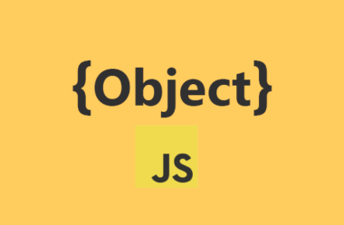

OBJETOS NO JS
js Objects
Objetos em JavaScript (JS Objects) são estruturas que armazenam dados em pares chave-valor. Eles possuem propriedades (valores) e métodos (funções). Construtores criam múltiplas instâncias, e há formas de exibir esses objetos dinamicamente.
js object properties
As propriedades de objetos em JavaScript (JS Object Properties) são os valores associados às chaves de um objeto. Elas podem ser acessadas ou modificadas, representando características ou dados de um objeto.
js object Methods
Os métodos de objetos em JavaScript (JS Object Methods) são funções associadas a um objeto. Eles permitem que o objeto execute ações ou manipule seus próprios dados, utilizando suas propriedades.
js object display
Em JavaScript, o Object Display refere-se às maneiras de exibir ou representar objetos. Isso pode ser feito acessando suas propriedades diretamente, convertendo o objeto em string (como com JSON.stringify()), ou exibindo no console com console.log().
js object constructors
Os Object Constructors em JavaScript são funções usadas para criar múltiplas instâncias de um objeto com as mesmas propriedades e métodos. Eles permitem a criação de novos objetos de maneira padronizada, utilizando a palavra-chave new.
Decisões

if/ else / else if
O que é?: São estruturas de controle condicional usadas para executar código com base em uma condição.
Pra que serve?: Serve para tomar decisões no código com base em condições diferentes, permitindo a execução de diferentes blocos de código dependendo das variáveis.
Switch
O que é?: É uma estrutura de controle que seleciona um dos muitos blocos de código a serem executados.
Pra que serve?: Serve para lidar com múltiplos valores possíveis de uma expressão, tornando o código mais organizado do que uma sequência de if/else.
. Operador Ternário
O que é?: É uma forma abreviada de escrever uma condição "if/else" simples.
Pra que serve?: Serve para reduzir o código e torná-lo mais compacto quando você precisa de uma avaliação condicional simples que retorna um valor.
Laços de reptição
WHILE
O que é?: O laço while é uma estrutura de repetição que continua a executar um bloco de código enquanto uma condição for verdadeira.
Pra que serve?: Serve para executar repetidamente um código até que uma determinada condição deixe de ser satisfeita, ideal para casos em que o número de repetições não é conhecido previamente.
FOR
O que é?: O laço for é uma estrutura de repetição que permite executar um bloco de código um número específico de vezes, geralmente baseado em um contador.
Pra que serve?: Serve para iterar sobre arrays, listas ou realizar uma sequência de ações repetidas quando o número de repetições é conhecido previamente, como ao percorrer uma coleção de elementos ou executar um código em um número fixo de iterações.
.MAP
O que é?: O método .map() é uma função usada em arrays que cria um novo array ao aplicar uma função a cada elemento do array original.
Pra que serve?: Serve para transformar os elementos de um array, retornando um novo array com os resultados da função aplicada a cada item, sem modificar o array original. É muito útil para transformar dados de maneira funcional e elegante.
Filter
O que é? O filter é um método de array em JavaScript que cria um novo array com todos os elementos que passam em um teste específico. Esse teste é definido por uma função callback fornecida pelo usuário.
Pra que serve?O filter é usado para filtrar elementos de um array com base em uma condição. Por exemplo, você pode usar filter para obter todos os números pares de um array de números ou todos os objetos que atendem a certos critérios.
REDUCE
O que é? O reduce é um método de array em JavaScript que aplica uma função a um acumulador e a cada elemento do array (da esquerda para a direita) para reduzir o array a um único valor. A função callback fornecida pelo usuário é chamada para cada elemento do array, e o resultado é acumulado.
Pra que serve? O reduce é usado para realizar operações que resultam em um único valor a partir de um array. Pode ser usado para somar todos os números de um array, concatenar strings, ou até mesmo transformar arrays em objetos ou outros formatos.
for in (objeto)
O que é? O for...in é um laço em JavaScript utilizado para iterar sobre as propriedades enumeráveis de um objeto. Ele permite acessar todas as chaves (ou nomes das propriedades) do objeto, um por um.
Pra que serve? O for...in é útil quando você precisa percorrer as propriedades de um objeto para executar operações com base nas chaves e valores. É ideal para quando você não conhece previamente as chaves do objeto ou quando precisa realizar uma ação para cada propriedade do objeto.
for in (iterable) array sring set map
O que é? O for...in é um laço que itera sobre as propriedades enumeráveis de um objeto. No entanto, seu comportamento pode variar quando usado com outros tipos de iteráveis como arrays, strings, sets e maps.
Para Arrays: Arrays: O for...in itera sobre as propriedades enumeráveis do array, que incluem índices e propriedades adicionais adicionadas ao array, não apenas os valores. Por isso, não é recomendado usar for...in para arrays se você só quer acessar os valores. Em vez disso, use métodos como forEach, map ou laços tradicionais for.
Para Strings: Strings: O for...in itera sobre os índices das propriedades da string. É possível acessar cada caractere da string dessa forma, mas a abordagem não é ideal para manipulação de strings. Métodos como split ou for...of são mais adequados para esse propósito.
Para Sets: Sets: O for...in não é adequado para iterar sobre Set. Em vez disso, use for...of para acessar os valores diretamente.
Para Maps: Maps: O for...in não itera sobre Map. Para acessar as chaves e valores de um Map, use for...of com os métodos .keys(), .values(), ou .entries().
foreeach (vetor)
O que é? O forEach é um método de array em JavaScript que executa uma função callback fornecida para cada elemento do array. Esse método não retorna um novo array e não altera o array original; apenas executa a função callback para cada item.
Pra que serve? O forEach é utilizado para aplicar uma função a cada elemento de um array, ideal para realizar operações como logs, atualizações de valores, ou execução de efeitos colaterais. É uma forma prática e legível de iterar sobre todos os elementos sem precisar gerenciar o índice manualmente.